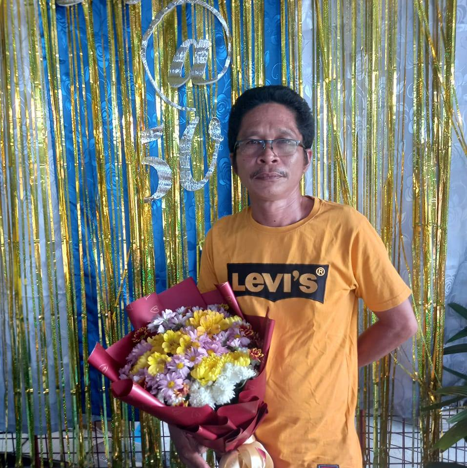
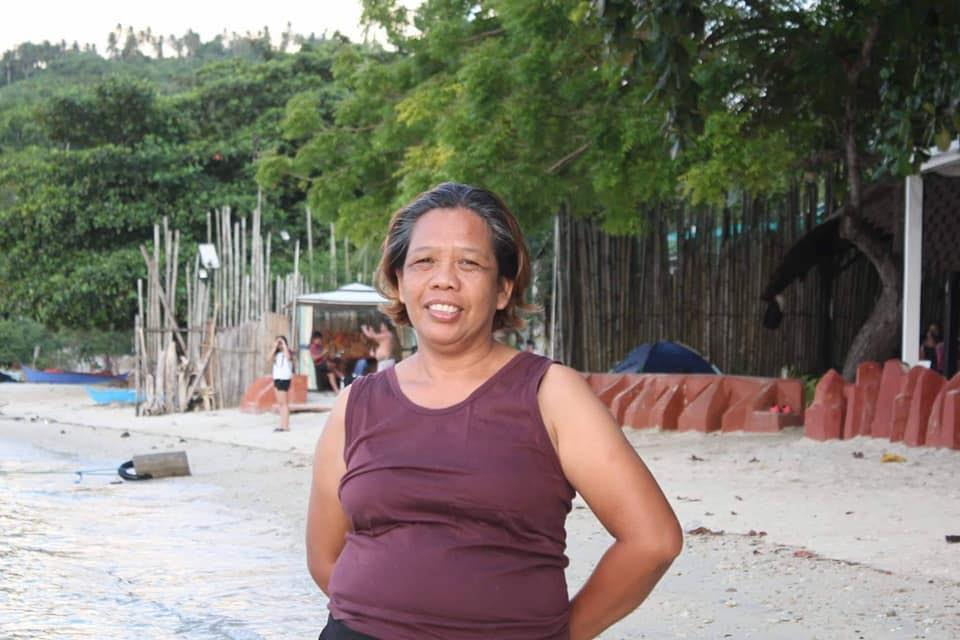
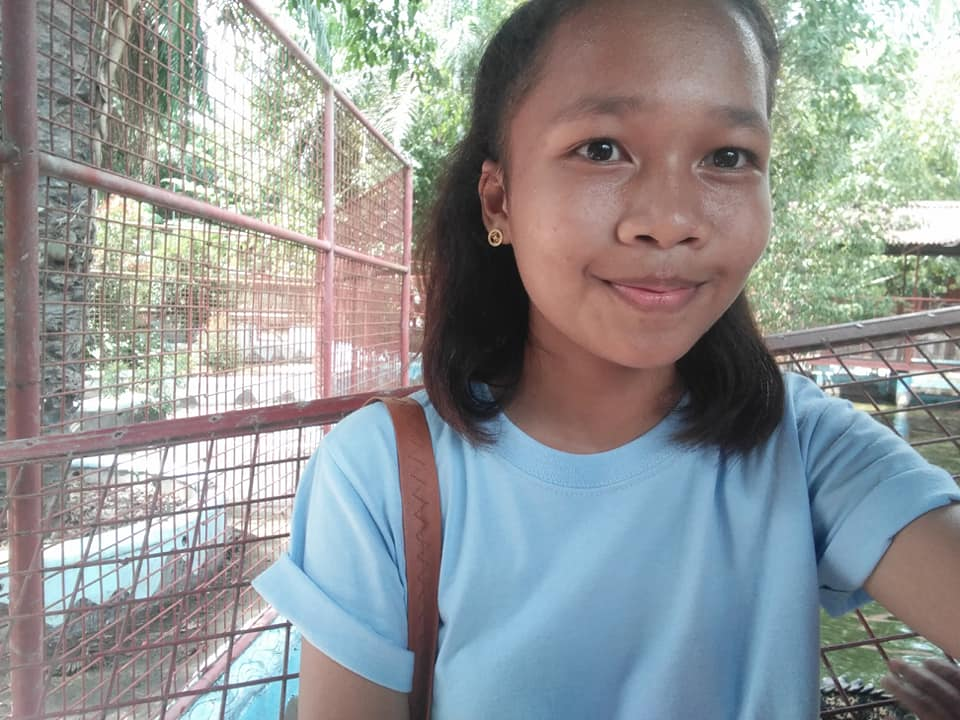
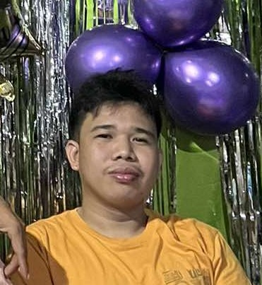
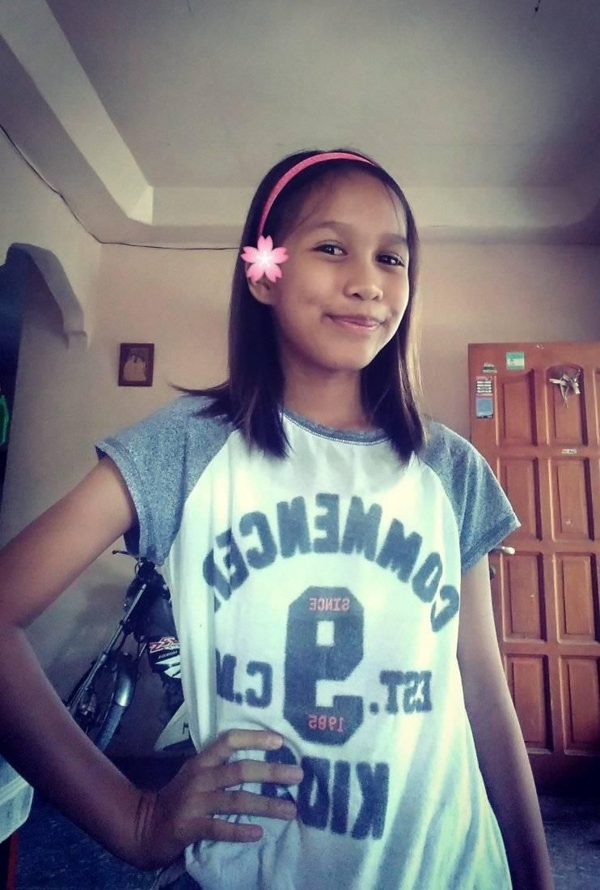

My Family
The people who matter most
Meet My Family
Family is the foundation of who I am. They have supported me throughout my journey and continue to inspire me every day.





The people who matter most
Family is the foundation of who I am. They have supported me throughout my journey and continue to inspire me every day.




